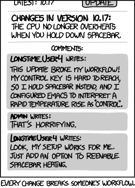

Find me online:
Use SemVer to manage this change:
tries to compress too much information into 3 numbers

(google "xkcd workflow") https://xkcd.com/1172/
With enough eyes all bugs are shallow features
this is a joke
…..mostly
pip install --pre ...
"the same thing we do every night Pinky: try to take over rebuild the world!"
https://github.com/tacaswell/build_the_world
python -m venv bleeding)pip install -v --no-build-isolation .I'm looking for anyone else who wants to do this